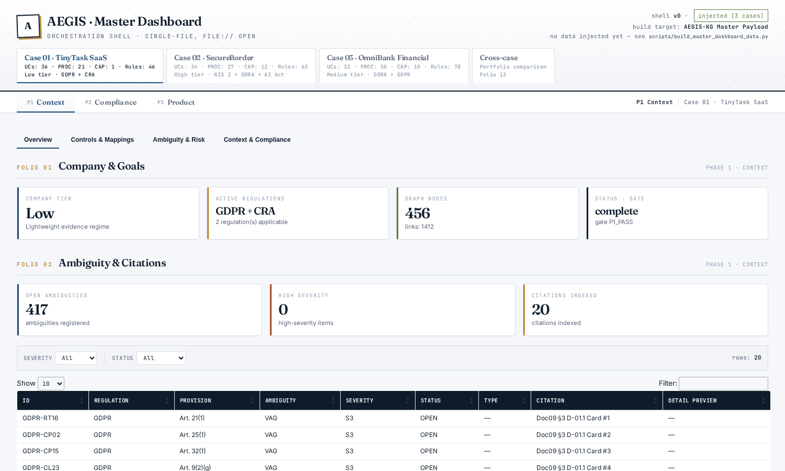

InvestigaçãoResearch
Esta página tem duas partes. A primeira são as experiências com modelos de linguagem que corro no supercomputador Deucalion. A segunda é a tese de doutoramento.
This page has two parts. The first is the language-model experiments I run on the Deucalion supercomputer. The second is my PhD thesis.
Experiências no DeucalionExperiments on Deucalion
Antes de cada experiência escrevo o protocolo: a hipótese, o que conta como resultado e o que me provaria errado. Depois corro tudo em lote via SLURM nas GPUs A100. O código está em aegis-mvp.
Before each experiment I write down the protocol: the hypothesis, what counts as a result, and what would prove me wrong. Then everything runs as SLURM batch jobs on the A100 GPUs. The code is in aegis-mvp.
Pipeline fixa ou agente livre?Fixed pipeline or free agent?
A mesma tarefa, feita de duas formas. Na pipeline sou eu que decido a ordem dos passos. No agente, o modelo decide.
The same task, done two ways. In the pipeline I decide the order of steps. In the agent, the model decides.
| Chamadas ao modeloModel calls | Corridas completasCompleted runs | |
|---|---|---|
| Pipeline fixaFixed pipeline | 42 | 15 / 15 |
| Agente livreFree agent | 220 | 7 / 15 |
O que garantiu a qualidade não foi o ciclo do agente, foram os parsers e as verificações entre passos. Com essas peças, a pipeline fez o mesmo trabalho com um quinto das chamadas.
What made the difference wasn't the agent loop but the parsers and checks between steps. With those in place, the pipeline did the same work with a fifth of the calls.
ReprodutibilidadeReproducibility
Com a seed fixa em 42, as 15 corridas deram resultados idênticos byte a byte. Sem seed, 40% das corridas pararam numa das verificações (a R6). Ou seja, a variação vinha da amostragem e não da infraestrutura.
With the seed fixed at 42, all 15 runs were byte-for-byte identical. Without a seed, 40% of runs stopped at one of the checks (R6). So the variation came from sampling, not from the infrastructure.
Prompts: o exemplo pesa mais do que a regraPrompts: the example beats the rule
Testei os mesmos prompts em 7 modelos (qwen, gemma, glm, nemotron, entre outros). O resultado mais claro foi que os modelos copiam a estrutura do exemplo que vem no prompt e ignoram regras escritas em prosa. Num dos passos (p2o), mudar só o exemplo levou o resultado de 0 em 37 para 37 em 37. As variações de prompt estão em lab/.
I tested the same prompts on 7 models (qwen, gemma, glm, nemotron and others). The clearest result: models copy the structure of the example in the prompt and ignore rules written in prose. In one step (p2o), changing only the example took it from 0 out of 37 to 37 out of 37. The prompt variants are in lab/.

Outros testesOther tests
Antes do Deucalion comparei mais de 13 modelos locais no CyberMetric, um conjunto de até 10 000 perguntas de cibersegurança, e testei routing entre modelos pequenos (MoE-CySec).
Before Deucalion I compared 13+ local models on CyberMetric, a set of up to 10,000 cybersecurity questions, and tested routing between small models (MoE-CySec).
A teseThe thesis
Doutoramento em Tecnologias e Sistemas de Informação (PDTSI) na Universidade do Minho, com bolsa FCT em ambiente não académico, feito no CCG/ZGDV e com o CeDRI (IPB).
PhD in Information Systems and Technology (PDTSI) at the University of Minho, on an FCT grant in a non-academic setting, carried out at CCG/ZGDV with CeDRI (IPB).
A pergunta é como passar de um regulamento para algo que uma equipa de software consegue implementar. Para isso estendo o 4SRS, um método que transforma requisitos em componentes de sistema. Os requisitos não funcionais que vêm da regulação passam por uma taxonomia (10 domínios, 38 subdomínios) e por análise de ameaças (STRIDE, LINDDUN) até chegarem a requisitos funcionais. Chamo a esta extensão AEGIS.
The question is how to go from a regulation to something a software team can implement. To do that I extend 4SRS, a method that turns requirements into system components. Non-functional requirements coming from regulation go through a taxonomy (10 domains, 38 sub-domains) and threat analysis (STRIDE, LINDDUN) until they become functional requirements. I call the extension AEGIS.
Estou a validar o método em três casos de estudo, de dimensões diferentes:
I'm validating the method on three case studies of different sizes:
| CasoCase | RegulamentosRegulations | PessoasStaff |
|---|---|---|
| TinyTask | 2 | 8 |
| SecureBorder | 4 | 450 |
| OmniBank | 5 | 5 000 |

Na revisão de literatura cada afirmação está ligada a uma das 322 fontes registadas, com a citação exata e o tipo de evidência. Um script (check_research_refs.py) falha se alguma afirmação citar uma fonte que não está no registo. Está em docs/research.
In the literature review every claim is linked to one of 322 registered sources, with the exact quote and the type of evidence. A script (check_research_refs.py) fails if a claim cites a source that isn't in the register. It's in docs/research.